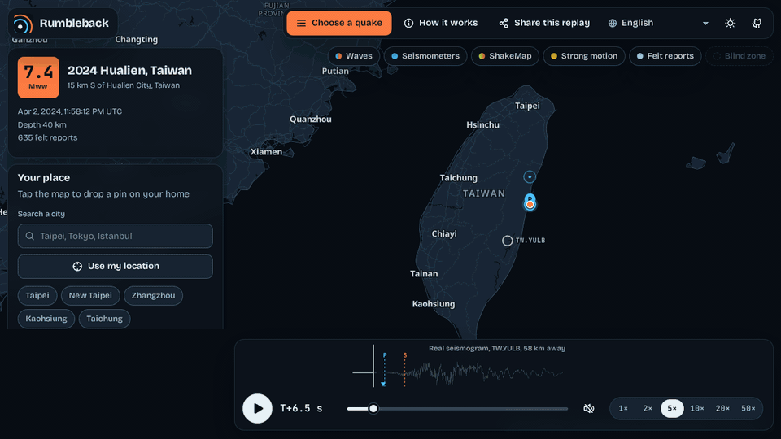
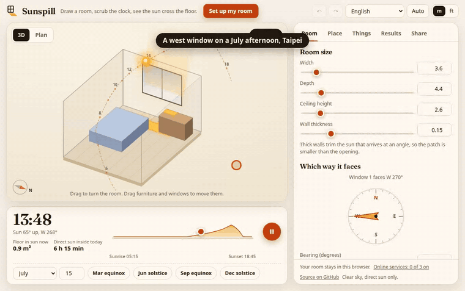
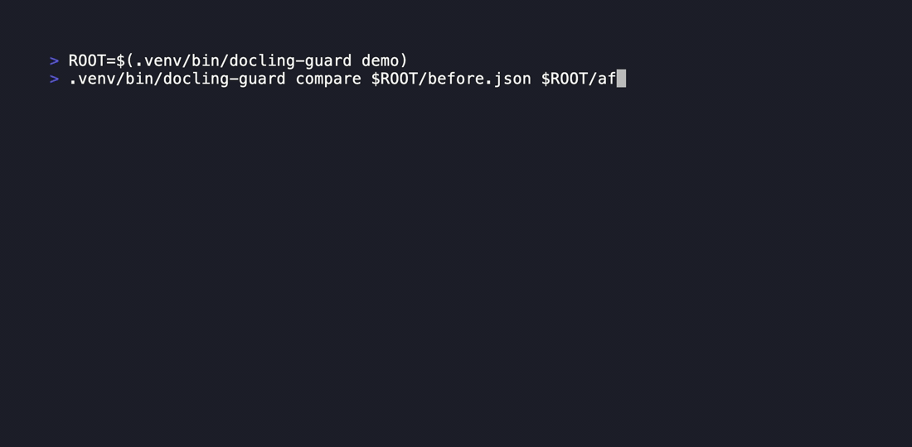
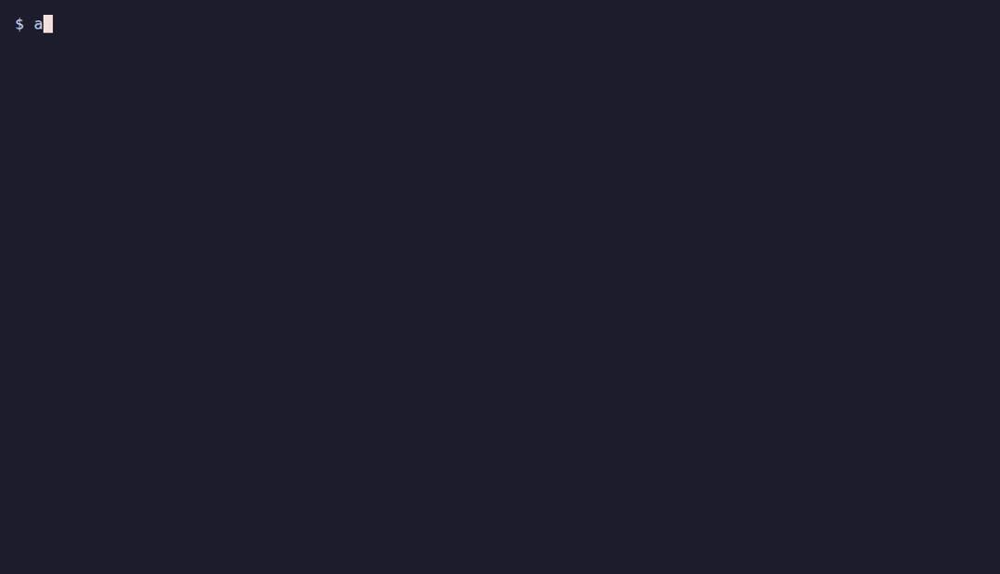
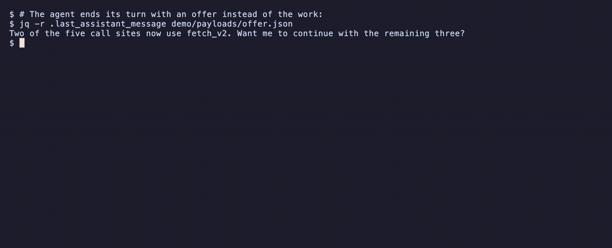

地震重播Rumbleback
★重播真實發生過的地震,看 P 波和 S 波掃過地圖,算出震波幾秒後到你家。
Replay a real earthquake and see when its waves reach your home.
對照 14 場地震、3,933 筆真實 P 波到時,中位誤差 0.66 秒

重播真實發生過的地震,看 P 波和 S 波掃過地圖,算出震波幾秒後到你家。

設定自己的房間、方位和周邊建築,看陽光每個小時落在地板和牆上的哪裡。

在 Docling 轉出的文件進入搜尋索引前,離線找出來源位置錯誤和內容遺失。

找出 AI 寫程式工具紀錄裡以明文留下的 API 金鑰,就地遮蔽並阻擋再次讀取。

讓寫程式的 AI 代理在工作還沒完成、測試還沒通過前不會結束這一輪。